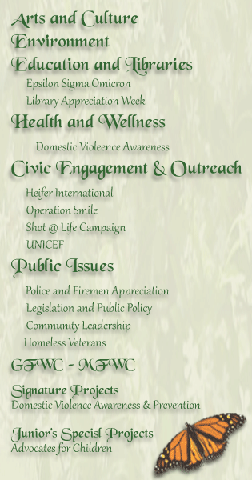

|
| Home | Katrina | History | Officers | How To Join | Calendar | Links |
|
Welcome The Women's Club of Gulfport works to support the arts, preserve natural resources, promote education, encourage healthy lifestyles, stress civic involvement, and work toward world peace and understanding. President's Project for 2020 - 2022: Focus on Education Our Mission The Women's Club of Gulfport is a non-profit membership women's organization dedicated to community improvement by enhancing the lives of others through volunteer service. Our club addresses the emerging needs of our local communities and the nation. We have the ability to tap into the expertise available at national, state and district levels, and the freedom to shape programs to suit particular needs of our local communities. We provide our members with model programs and projects that encompass the major issues of our time including women's health, preservation of natural resources, literacy, abuse prevention, arts in the community and more. We strive to follow the ideals and goals of the General Federation of Women's Clubs. |
Community Service Program Areas  |
|
© 2020 Women's Club of Gulfport - All Rights Reserved |